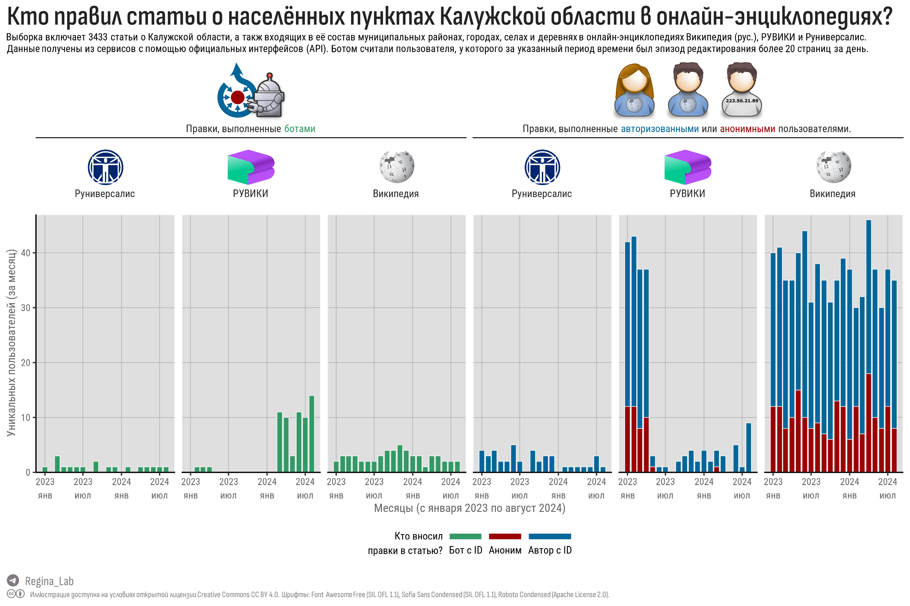
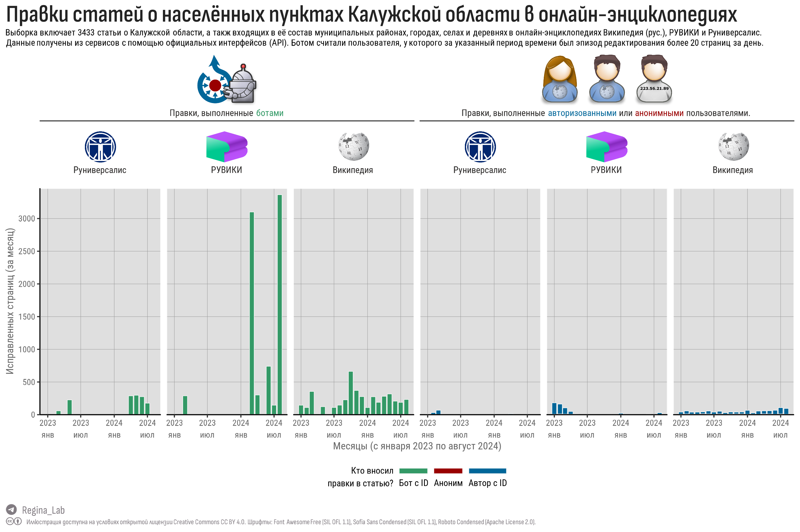
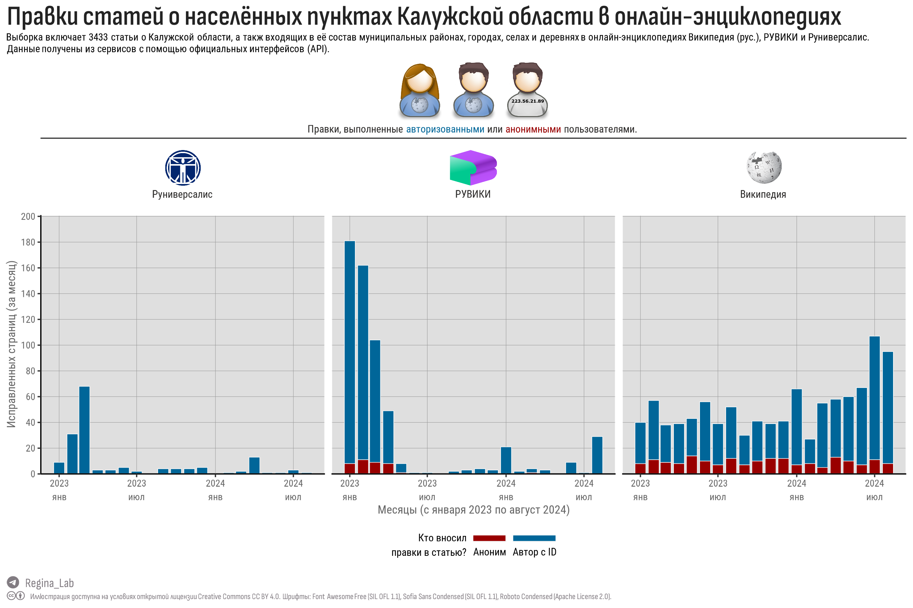

Выполнен анализ правок в веб-энциклопедиях Википедия, РУВИКИ и Руниверсалис статей, посвященных Калужской области и входящих в её состав муниципальных районов и населенных пунктов.
В опубликованном нами в прошлой статье “Населённые пункты Калужской области в разных Википроектах” ссылки на статьи об одном объекте похожи как братья-близнецы (о причинах см. раздел Почему это важно).
Мы решили выяснить, насколько отличается интенсивность правок в оригинальной Википедии и вики-энциклопедиях РУВИКИ и Руниверсалис. Иными словами, добились ли успеха импортозамещающие сервисы? Смогли ли донести информацию о своих ресурсах до калужских летописцев?
Для ответа на этот вопрос мы использовали базовый функционал ПО MediaWiki, на основе которого работают все вышеперечисленные сервисы, и для каждой из 3433 статей выгрузили полную историю правок с 01 января 2023 года по 31 августа 2024 года. Выражаем признательность руководству РУВИКИ и Руниверсалиса, что они не закрыли эту возможность.
Использование ботов для управления контентом онлайн-энциклопедий не является чем-то преступным. Боты могут проверять оценивать достоверность внесённых пользователями правок и при необходимости их отменять, проверять статус ссылок на веб-страницы, присваивать статьям категории, добавлять новые сведения из других источников (например, географические координаты или ссылки на нормативные документы).
Хотя правила использование ботов рекомендуют называть их соответствующим образом, мы не стали угадывать роботов среди имен пользователей, а попросту приняли, что авторизованные пользователи, которые имели эпизоды высокой активности (более 20 отредактированных статей в день) – боты. Конечно, это могут быть редакторы, которые работают в режиме бота 😂.
За период с 01 января 2023 года по 31 августа 2024 года в статьи о Калужской области и входящих в неё населенных пунктах (всего – 3433 статьи) в русскоязычной Википедии правки вносили приблизительно 500+ пользователей (из них 5, вероятно, боты, 196 – анонимные пользователи), для сравнения в РУВИКИ общее число уникальных пользователей было ~ в 3 раза меньше, в Руниверсалис – в 20 раз меньше.
За указанный период авторизованные пользователи внесли правки в 593 статьи в Википедии, в 498 – в РУВИКИ, в 130 – в Руниверсалис. Анонимные пользователи внесли правки в меньшее число статей – 114 (Википедия), 31 (РУВИКИ), 0 (Руниверсалис).
По всей видимости, у Руниверсалис более консервативная политика по сравнению с РУВИКИ – по статьям из выборки работали лишь 4 бота и всего 22 автора (за выбранный период), при этом никаких анонимов.
На иллюстрации ниже показано количество уникальных пользователей, которые правили статьи из выборки в течение месяца в период времени с 1 января 2023 года по 31 августа 2024 года. Авторизованные пользователи и боты подсчитывались по имени (user_id), неавторизованные пользователи по IP-адресу (да-да, они сохраняются в истории, сюрприз?).

У РУВИКИ количество авторов в апреле-мае 2023 года резко снизилось (вероятно, предыдущая активность поддерживалась рекламными кампаниями) и к концу 2023 года в статьи из выборки вносили правки не более 5 пользователей в месяц. В 2024-ом году владельцы РУВИКИ придали новый импульс своей энциклопедии – с марта начали работать боты, а к концу лета количество пользователей, правивших страницы (из выборки) почти достигло 10.
в русскоязычной Википедии в статьи из выборки ежемесячно вносили правки 30-40 пользователей. Некоторые из этих правок были отменами правок. Например, если какой-нибудь аноним написал бы в статье про Обнинск, что “это город с самой грязной рекой Калужской области”, такую правку позже могли бы отменить, как необъективную оценку или вандализм.
Не менее интереснее посмотреть, сколько статей из выборки получили правки за указанный период? Ведь может статься, что все правки вносились в 1-2 статьи.

На фоне активности ботов, которые в РУВИКИ в 2024 году внесли изменения практически во все статьи, правки пользователей попросту незаметны. На иллюстрации ниже удалены правки ботов, что позволяет увидеть активность пользователей.

Википедия имеет огромное информационное влияние. Во-первых, поисковые сервисы (Google, Yandex) выдают Wikipedia в первой пятерке результатов; во-вторых, массивы статей используются для машинного обучения и извлечения фактов. А если принять во внимание, известным всем обывателям факт, что любой пользователь сети Интернет может зарегистрироваться в Wikipedia и написать туда любую глупость или гадость, тогда становится понятным, почему депутаты и сенаторы так боятся, что неразумный школьник, задающий вопрос чат-боту, вдруг может получить ответ, который не понравится его родителям, учителям и прочим уполномоченным лицам.
На деле механизм не так прост… у большинства статей есть авторы, которые подписываются на уведомления о появлении новых правок. И если какой-нибудь умозрительный “Полиграф Полиграфович” решит “вальнуть в статью настоящей правды”, то его действия очень скоро станут предметом рассмотрения небезразличных авторов и модераторов, которые имеют возможность новые правки отменить. Если новоявленный борзописец вместо предъявления обоснований начнет горячиться, то закончится всё его блокировкой. Добиться внесения в статью своей точки зрения можно только представив обоснование для правок – например, подтвержденный факт из какого-нибудь авторитетного источника. Понятное дело, что подобные системы управления, основанные на консенсусе, хрупки в силу того, что рано или поздно в национальных комитетах (отвечающих за развитие википедии на определенном языке) образуются “тусовочки”, которые начинают тянуть идеологическое одеялко на себя…
По этой причине с началом СВО дискуссии об ангажированности сервиса Wikipedia и необходимости её скорейшего импортозамещения наводнили СМИ. Так появились РуВики и Руниверсалис, где бывшие энтузиасты русскоязычной википедии (многие из которых ранее были изгнаны из нацкомитетов и заблокированы в русскоязычной Wikipedia) решили, что смогут создать более справедливую википедию. Справедливости ради, следует сказать, что действительно многие члены “национального комитета” по развитию русскоязычной википедии проживают не в России и не могут смотреть канал М.Симоньян без конской дозы антацида.
Для быстрого запуска и скорейшего достижения своих благих целей обе “конкурирующие фирмы”, разумеется, скромничать не стали – взяли открытое программное обеспечение MediaWiki и массив русскоязычных статей из Wikipedia (последние также распространяются на условиях открытых лицензий).
Задачи перед отечественными вики-энциклопедиями стоят совершенно утопичные – надо переносить и обновлять статьи, переводить новые статьи с других языков, воспитывать отечественных авторов и редакторов, формировать общественное отношение к энциклопедиям, искать финансирование для долгосрочного развития.
Как показывает наш анализ, это почти утопическая цель и причин здесь несколько:
Помимо РУВИКИ и Руниверсалиса есть ещё вики-проект Общества “Знание”, на которой сегодня всего 35 тысяч статей, и Большая российская энциклопедия, получившие в наследство Большую советскую энциклопедию. И все они не без покровителей, которые хотят кушать. А значит будут рвать бюджет “на нитки” и грызть друг друга. В живых останутся те, кому энциклопедии нужны лишь для галочки.
Уровень образования и культуры в России снижается, а зарегулированность и зависимость от Центра растёт. Это означает только одно – вместо рекомендации школам открыть факультативы по вики-разметке и создавать открытые данные о родном крае, региональное министер скорее спустит на учителей обязательный план написать по 100 слов в очередное многотиражное издание или зарегистрироваться в сервисе очередной АНО, с которой губернатор чего-то отпарафинировал. Потому что денюжка, а не вот этот ваш креатив-коммонс. А само по себе описание калужских деревень не напишется.
А почему всё-таки так важны продукты Wikimedia Foundations? Положим, 10 лет назад среднестатистический житель Калужской области, слабо владеющий иностранными языками, мог бы сказать: “Да ну и бес с ними”. Но сегодня браузеры вполне добротно переводят веб-страницы, а это значит, что в распоряжении тех же школьников и студентов не только тексты на русском языке, но и статьи на других языках, которых… намного больше. А также связанные со статьями категории, отношения, словари, произведения, образовательные курсы, библиотеки изображений, объекты культурного наследия, маршруты и т.д.
Пользуйтесь… пока не заблокировали.
Нравятся наши материалы? 👉 подписывайтесь на -канал @Regina_Lab или -группу @reginaobninsklab.
Правки статей о Калужской области в русскоязычных вики-энциклопедиях. // Блог Regina Lab. - 2024. - URL: https://reginaobninsklab.github.io/posts/kaluga-locations-wiki-revisions/. - Дата публикации: 09 сентября 2024 г.
Если не указано иное, то статья целиком и составляющие её текст, иллюстрации и данные могут использоваться на условиях публичной лицензии Creative Commons CC BY 4.0 Deed Attribution 4.0 International.
См. соответствующий раздел на странице “О проекте”.
Allaire J, Xie Y, Dervieux C, McPherson J, Luraschi J, Ushey K, Atkins A, Wickham H, Cheng J, Chang W, Iannone R (2023). rmarkdown: Dynamic Documents for R. R package version 2.22, https://github.com/rstudio/rmarkdown.
van den Brand T (2024). ggh4x: Hacks for ‘ggplot2’. https://github.com/teunbrand/ggh4x, https://teunbrand.github.io/ggh4x/.
Wickham H (2022). stringr: Simple, Consistent Wrappers for Common String Operations. R package version 1.5.0, https://CRAN.R-project.org/package=stringr.
Wickham H, François R, Henry L, Müller K, Vaughan D (2023). dplyr: A Grammar of Data Manipulation. R package version 1.1.2, https://CRAN.R-project.org/package=dplyr.
Wickham H, Henry L (2023). purrr: Functional Programming Tools. R package version 1.0.1, https://CRAN.R-project.org/package=purrr.
Wickham H, Hester J, Bryan J (2024). readr: Read Rectangular Text Data. R package version 2.1.5, https://CRAN.R-project.org/package=readr.
Wickham H, Vaughan D, Girlich M (2024). tidyr: Tidy Messy Data. R package version 1.3.1, https://CRAN.R-project.org/package=tidyr.
Xie Y (2023). knitr: A General-Purpose Package for Dynamic Report Generation in R. R package version 1.43, https://yihui.org/knitr/.
Xie Y (2015). Dynamic Documents with R and knitr, 2nd edition. Chapman and Hall/CRC, Boca Raton, Florida. ISBN 978-1498716963, https://yihui.org/knitr/.
Xie Y (2014). “knitr: A Comprehensive Tool for Reproducible Research in R.” In Stodden V, Leisch F, Peng RD (eds.), Implementing Reproducible Computational Research. Chapman and Hall/CRC. ISBN 978-1466561595.
Xie Y, Cheng J, Tan X (2024). DT: A Wrapper of the JavaScript Library ‘DataTables’. R package version 0.33, https://CRAN.R-project.org/package=DT.
Xie Y, Allaire J, Grolemund G (2018). R Markdown: The Definitive Guide. Chapman and Hall/CRC, Boca Raton, Florida. ISBN 9781138359338, https://bookdown.org/yihui/rmarkdown.
Xie Y, Dervieux C, Riederer E (2020). R Markdown Cookbook. Chapman and Hall/CRC, Boca Raton, Florida. ISBN 9780367563837, https://bookdown.org/yihui/rmarkdown-cookbook.